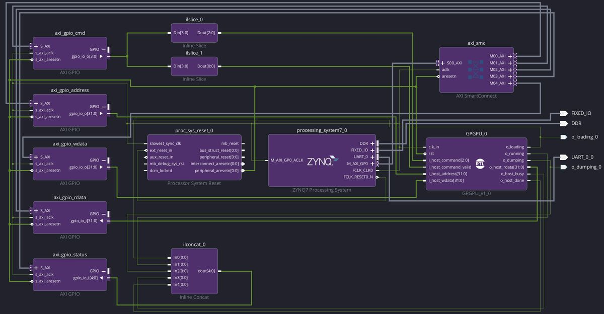

ECE338 Parallel Computer Architecture / RISC-V GPGPU
RISC-V GPGPU
32 RISC-V cores we designed, running on a real FPGA

What it is
A small processor for parallel work, built from 32 RISC-V cores that all run the same instruction at the same time. The Zynq chip's ARM core sends it a program and data, and it runs the work on all 32 cores at once.
We first ran it on a ZedBoard. It now also runs on the Smart Zynq SL, where my colleagues use it, and it is one of the two demos in my live FPGA lab.
Why it's hard
Every core has to stay in step with the others, every result has to match a reference model, and the whole design has to fit on one FPGA and still meet timing. It uses 88% of the chip's logic.
How it works
- One shared fetch and decode stage feeds 32 lanes running in lockstep.
- Each lane has a 5-stage pipeline with hazard detection and forwarding, plus a pipelined multiplier.
- A crossbar connects the lanes to dual-port block RAM.
- The ARM core talks to the GPGPU over AXI GPIO, after a UART inside the FPGA logic proved unreliable.
Results
One step of a 32-body n-body simulation, GPGPU at about 38.5 MHz against the ZedBoard's ARM Cortex-A9 at about 667 MHz.
That is 2.38× faster at about a seventeenth of the clock. Peak throughput is about 1.23 billion integer operations per second, and data memory moves 307 MB/s. The slowest part is the UART link to the host, at about 11.5 KB/s.
How we tested it
- A Python golden model that every result is checked against.
- Constrained-random tests and an instruction fuzzer.
- End-to-end tests running real programs on the board.
My part
We designed and built it together. I went deeper on the communication between the host and the GPGPU.
What's next
Version 2 adds graphics, DDR memory, branch divergence and warp scheduling.
Team
Tools
What this project was built with. Pick one to see where else I used it.